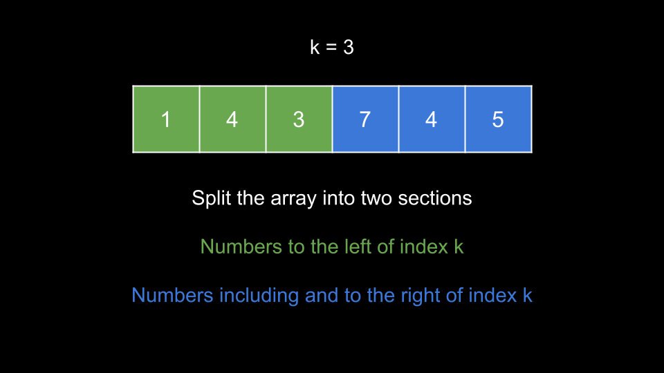
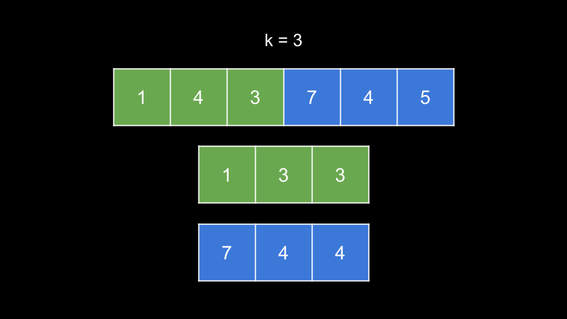
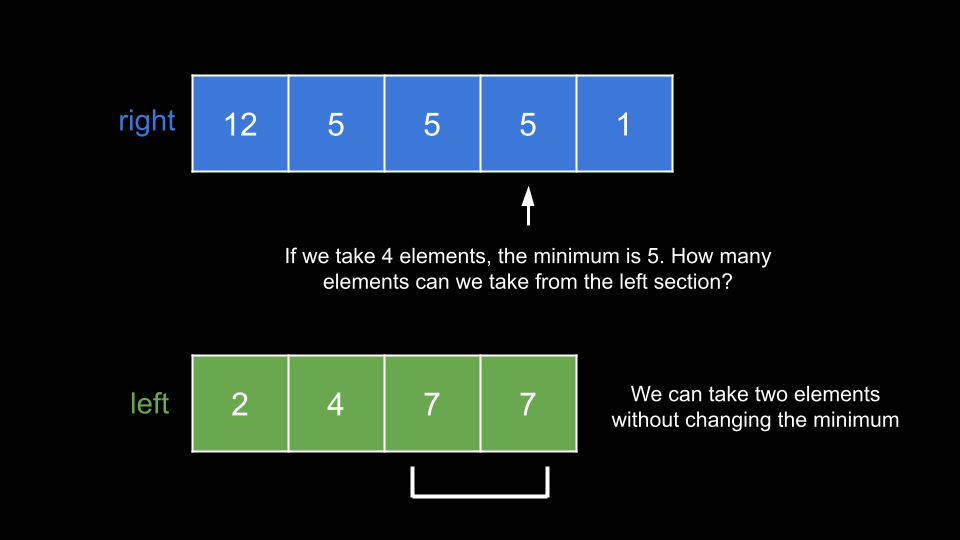
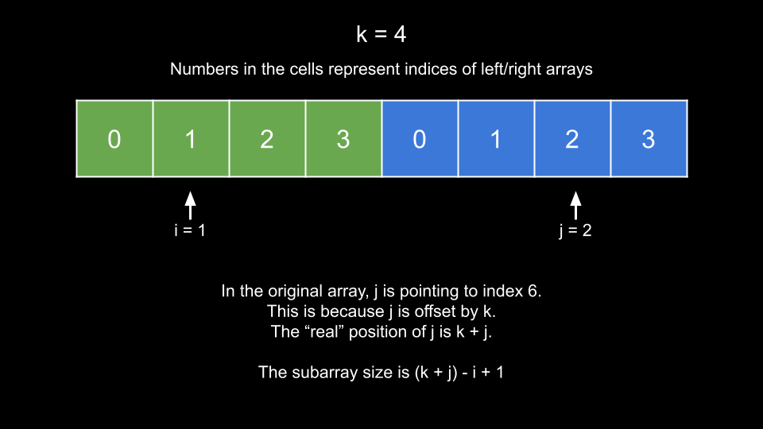
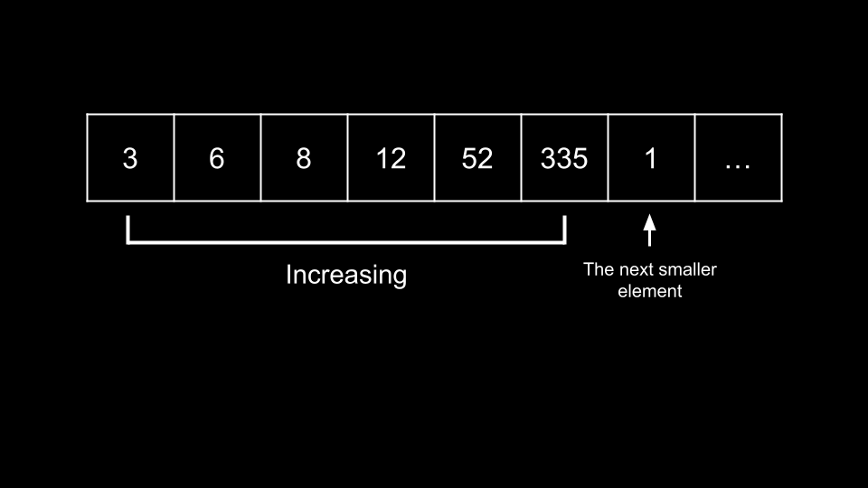

Intuition
The score of a subarray is its length multiplied by its minimum element. In this problem, we must find the maximum
score of all subarrays that contain nums[k].
How can we improve our score? When we take more elements we increase the length of the subarray, which helps the score. However, we may find new minimums, which would decrease our score.
We can start by separating the array - numbers to the left of k and numbers to the right of
k (and including k).

Notice that k is the meeting point of these sections. If we want to take elements in the left section,
we start from the end of the left section and move toward the beginning. If we want to take elements in the right
section, we start from the beginning and move toward the end.
Of course, each element we take will increase our length by 1. But how will it affect our minimum? To
compute this quickly, we can create new arrays for each section. These arrays will represent the minimum element we
have seen in the section if we started from k.

In the above example, let's say that we took two elements from the left section. We can quickly see that the minimum
element from the left section is 3 using these arrays. Similarly, if we took all elements from the
right section, we could quickly see that the minimum element from the right section is 4.
We will call these arrays that allow us to find the minimums
leftandright.
Now that we have these arrays, how can we solve the problem? Because nums[k] is in the right section, we
will iterate over the entire right section and try to take each element. Let's say we take some number of elements
from the right section, and the minimum is x. How many elements can we take from the left section
without changing x as the minimum? We must only take elements from the left that are greater than or
equal to x.
Let's switch to another example. For a given array, assuming we have already built the left and right
arrays using the previous method.

In the above example, let's say that we take four elements from the right section. The minimum is 5. How
many elements can we take from the left section without changing the minimum? Two. This gives us a total size of
4 + 2 = 6, and a total score of 6 * 5 = 30.
How do we quickly find the number of elements we can take from the left section? Note that when we are building the
array left from right to left, each time we go left we encounter a new number that is only likely to
lower the minimum value, and the further to the left we go, the smaller the minimum value becomes, i.e.,
left is already sorted from smallest to largest. Therefore, we can perform a binary search to identify
how many elements we can take.
This brings us to our solution. We iterate with j over each index of right and assign
currMin = right[j], which represents the minimum of our subarray. We then perform a binary search to
find i, the insertion index of currMin in left. Once we have i,
we can calculate the size of our subarray, and thus the score. We take the maximum of all scores.
How do we calculate the size of our subarray given i and j?

Because the right section starts at index k, its indices are offset by k from the real
indices. Thus, in the original array, right[j] points to index k + j. The left section is
not offset at all, so i is correctly positioned. The size of a subarray bounded by [left,
right] is right - left + 1. Thus, the size of our subarray [i, k + j] is (k
+ j) - i + 1. We can multiply this by right[j] to calculate our score.
You may have noticed: this algorithm assumes that in the optimal subarray, the minimum value is in the right section.
But what if this assumption is wrong, and its actually in the left section? We can check the left section by simply
reversing the array and then applying the same algorithm to it. Note that when we reverse the array, k
will change. After reversal, the original k will be at nums.length - k - 1.
Algorithm
solve(nums, k) that runs our algorithm:
n = nums.length, left to an array of length k, and currMin
to a large value.
i from k - 1 until 0. At each index, update
currMin with nums[i] if it is smaller and set left[i] = currMin.
right and reset currMin to a large value.i from k until n - 1. At each index, update
currMin with nums[i] if it is smaller and push currMin to right.
ans = 0.j over the indices of right:
currMin = right[j].i, the insertion index of currMin in left using
binary search.
size = (k + j) - i - 1.ans with currMin * size if it is larger.ans.ans = solve(nums, k).nums.ans, solve(nums, nums.length - k - 1).Implementation
Java
class Solution {
public int maximumScore(int[] nums, int k) {
int ans = solve(nums, k);
for (int i = 0; i < nums.length / 2; i++) {
int temp = nums[i];
nums[i] = nums[nums.length - i - 1];
nums[nums.length - i - 1] = temp;
}
return Math.max(ans, solve(nums, nums.length - k - 1));
}
public int solve(int[] nums, int k) {
int n = nums.length;
int left[] = new int[k];
int currMin = Integer.MAX_VALUE;
for (int i = k - 1; i >= 0; i--) {
currMin = Math.min(currMin, nums[i]);
left[i] = currMin;
}
List right = new ArrayList();
currMin = Integer.MAX_VALUE;
for (int i = k; i < n; i++) {
currMin = Math.min(currMin, nums[i]);
right.add(currMin);
}
int ans = 0;
for (int j = 0; j < right.size(); j++) {
currMin = right.get(j);
int i = binarySearch(left, currMin);
int size = (k + j) - i + 1;
ans = Math.max(ans, currMin * size);
}
return ans;
}
public int binarySearch(int[] nums, int num) {
int left = 0;
int right = nums.length;
while (left < right) {
int mid = (left + right) / 2;
if (nums[mid] < num) {
left = mid + 1;
} else {
right = mid;
}
}
return left;
}
}
C++
class Solution {
public:
int maximumScore(vector& nums, int k) {
int ans = solve(nums, k);
reverse(nums.begin(), nums.end());
return max(ans, solve(nums, nums.size() - k - 1));
}
int solve(vector& nums, int k) {
int n = nums.size();
vector left(k, 0);
int currMin = INT_MAX;
for (int i = k - 1; i >= 0; i--) {
currMin = min(currMin, nums[i]);
left[i] = currMin;
}
vector right;
currMin = INT_MAX;
for (int i = k; i < n; i++) {
currMin = min(currMin, nums[i]);
right.push_back(currMin);
}
int ans = 0;
for (int j = 0; j < right.size(); j++) {
currMin = right[j];
int i = lower_bound(left.begin(), left.end(), currMin) - left.begin();
int size = (k + j) - i + 1;
ans = max(ans, currMin * size);
}
return ans;
}
};
Python3
class Solution:
def maximumScore(self, nums: List[int], k: int) -> int:
def solve(nums, k):
n = len(nums)
left = [0] * k
curr_min = inf
for i in range(k - 1, -1, -1):
curr_min = min(curr_min, nums[i])
left[i] = curr_min
right = []
curr_min = inf
for i in range(k, n):
curr_min = min(curr_min, nums[i])
right.append(curr_min)
ans = 0
for j in range(len(right)):
curr_min = right[j]
i = bisect_left(left, curr_min)
size = (k + j) - i + 1
ans = max(ans, curr_min * size)
return ans
return max(solve(nums, k), solve(nums[::-1], len(nums) - k - 1))
Complexity Analysis
Given nn
as the length of nums,
Time complexity: O(n⋅logn)O(n \cdot \log{}n)
We require O(n)O(n) time to create
left and right. Then, we iterate over the indices of right, which is
not more than O(n)O(n)
iterations. At each iteration, we perform a binary search over left, which does not cost more
than O(logn)O(\log{}n). Thus, solve costs O(n⋅logn)O(n \cdot \log{}n), and we call it twice.
Space complexity: O(n)O(n)
left and right have a combined length of nn.
Intuition
In this approach, we will use a similar idea as in the previous approach. For a given index i, if we
treat nums[i] as the minimum element, we need to know how many elements we can take on the left and
right such that we do not take any elements less than nums[i].
You might be thinking: what if
nums[k]is not included? We will get to that after presenting the full idea of the approach.
Essentially, we need to know how far away the next lesser element is on both sides. If we have this information for
all indices, we can quickly calculate the maximum score possible by treating every nums[i] as the
minimum, since in the optimal solution, one of the indices must be the minimum.
There is a very similar problem called Next Greater Element. The logic is identical, except that we are looking for the next smaller element. We can accomplish this using a monotonic stack.
A monotonic stack is a stack whose elements are always sorted. In our case, we want a monotonic increasing stack, i.e. the elements in the stack are always sorted in ascending order.
To maintain this monotonic stack, we need to make sure that whenever we push a new element, it is the largest
value in the stack. Before we push an element num, we check the top of the stack. If the top of the
stack is greater than num, we pop from it. Since there may be multiple elements greater than num
in the stack, we need to use a while loop to "clean" the stack before pushing num.
Only once there are no elements in the stack greater than num will we push num.
We will create an array left, where left[i] has the index of the first element to the left
of i that has a lower value in nums than nums[i].
Similarly, we will create an array right where right[i] has the index of the first element
to the right of i that has a lower value in nums than nums[i].
So how do we calculate right? Let's say that we are iterating over nums from the left and
we have a chain of increasing numbers:

As you can see in the example, we have 6 increasing numbers, and then a 1 that is less than all of them.
This 1 (at index 6) should be the value of right for all the indices of the increasing
numbers. If we maintain a monotonic increasing stack, then this 1 will cause all those numbers to be
popped out.
With a monotonic increasing stack, whenever we see an element that is smaller than the top of the stack, it is guaranteed to be the first smaller element for the element at the top of the stack. This is exactly what we are looking for.
To calculate left, we use the exact same process, except we iterate backward starting from the end of
nums.
Note that because we need to remember what indices to update when we pop from the stack, we will store indices on the
stack instead of the elements themselves. We can easily find the values by referencing nums.
We will initialize the values of left to -1 and the values of right to
n. This way, the math will still work out later if there are elements that do not have any lower values
to the left or right.
Once we have left and right, we can iterate over all indices i and try to find
a maximum score. Remember that the subarray must contain index k. Thus, we can only use an index i
as the minimum if left[i] < k and right[i] > k.
When we treat an index i as the minimum, what score can we achieve? Our window starts one index after
left[i] because including left[i] would create a new minimum. Similarly, our window ends
one index before right[i]. Thus, we need to subtract 2 from the normal subarray size
formula. This gives us a subarray size of right[i] - left[i] - 1. We multiply this size by nums[i]
to get our score.
Algorithm
n = nums.length, left as an array of length n with values of
-1, and an empty stack.
i from n - 1 until 0:
stack is greater than nums[i],
pop this index from stack. Given j as the index popped from the
stack, set left[j] = i.
i to stack.right as an array of length n with values of n and reset
stack.
i over the indices of nums:
stack is greater than nums[i],
pop this index from stack. Given j as the index popped from the
stack, set right[j] = i.
i to stack.ans = 0.i over the indices of nums:
left[i] < k and right[i] > k, update ans with nums[i]
* (right[i] - left[i] - 1) if it is larger.
ans.Implementation
Java
class Solution {
public int maximumScore(int[] nums, int k) {
int n = nums.length;
int left[] = new int[n];
Arrays.fill(left, -1);
Stack stack = new Stack<>();
for (int i = n - 1; i >= 0; i--) {
while (!stack.isEmpty() && nums[stack.peek()] > nums[i]) {
left[stack.pop()] = i;
}
stack.push(i);
}
int right[] = new int[n];
Arrays.fill(right, n);
stack = new Stack<>();
for (int i = 0; i < n; i++) {
while (!stack.isEmpty() && nums[stack.peek()] > nums[i]) {
right[stack.pop()] = i;
}
stack.push(i);
}
int ans = 0;
for (int i = 0; i < n; i++) {
if (left[i] < k && right[i] > k) {
ans = Math.max(ans, nums[i] * (right[i] - left[i] - 1));
}
}
return ans;
}
}
C++
class Solution {
public:
int maximumScore(vector& nums, int k) {
int n = nums.size();
vector left(n, -1);
vector stack;
for (int i = n - 1; i >= 0; i--) {
while (!stack.empty() && nums[stack.back()] > nums[i]) {
left[stack.back()] = i;
stack.pop_back();
}
stack.push_back(i);
}
vector right(n, n);
stack.clear();
for (int i = 0; i < n; i++) {
while (!stack.empty() && nums[stack.back()] > nums[i]) {
right[stack.back()] = i;
stack.pop_back();
}
stack.push_back(i);
}
int ans = 0;
for (int i = 0; i < n; i++) {
if (left[i] < k && right[i] > k) {
ans = max(ans, nums[i] * (right[i] - left[i] - 1));
}
}
return ans;
}
};
Python3
class Solution:
def maximumScore(self, nums: List[int], k: int) -> int:
n = len(nums)
left = [-1] * n
stack = []
for i in range(n - 1, -1, -1):
while stack and nums[stack[-1]] > nums[i]:
left[stack.pop()] = i
stack.append(i)
right = [n] * n
stack = []
for i in range(n):
while stack and nums[stack[-1]] > nums[i]:
right[stack.pop()] = i
stack.append(i)
ans = 0
for i in range(n):
if left[i] < k and right[i] > k:
ans = max(ans, nums[i] * (right[i] - left[i] - 1))
return ans
Complexity Analysis
Given nn
as the length of nums,
Time complexity: O(n)O(n)
It costs O(n)O(n) to calculate
left and right. We iterate over each index once and perform amortized O(1)O(1) work at each
iteration. The reason it amortizes to O(1)O(1), despite the while
loop, is because the while loop can run a maximum of nn times across all iterations, and each
index can only be pushed onto and popped from the stack once.
To calculate ans, we iterate over the indices once and perform O(1)O(1) work at each iteration.
Space complexity: O(n)O(n)
left, right, and stack all require O(n)O(n) space.
Intuition
Sometimes the simplest approach is the best! The optimal subarray must contain index k, so it makes
sense to consider the subarray with only nums[k] as a starting point.
From here, how do we expand the subarray? We can either add an element to the left or an element to the right. Let's
say we have two pointers, left and right that represent our subarray. Which direction
should we go?
If we move left, it's equivalent to adding nums[left - 1] to our subarray. If we move right, it's
equivalent to adding nums[right + 1] to our subarray. We should move in the direction of the greater
element.
At each step, we update currMin which is initially set to nums[k], and try to update ans
which is also initially set to nums[k]. We can update ans with currMin * (right -
left + 1) if it is larger.
This greedy process is very similar to the one used to solve Container With Most Water. But why does it work? We will use a proof by contradiction to demonstrate that not doing it this way wouldn't result in a higher value either.
At each step, we choose between having our subarray as [left - 1, right] or [left, right +
1]. Let's assume that nums[left - 1] > nums[right + 1] and the optimal subarray has not been
found yet. The optimal subarray must include nums[left - 1]. If it doesn't, then it must include nums[right
+ 1], since we could only move right to "avoid" nums[left - 1]. However, any subarray that
includes nums[right + 1] could also include nums[left - 1] without affecting the minimum,
while also increasing the length of the subarray and thus the score. Thus, it is impossible for the optimal subarray
to include nums[right + 1] and not nums[left - 1], and in general the optimal subarray
must include nums[left - 1].
Algorithm
To implement the while loop, we will iterate until we have exhausted the array. If one of the pointers is out of
bounds, we will consider the element it points to as 0.
n = nums.length, left = k, right = k, ans =
nums[k], and currMin = nums[k].
left > 0 or right < n - 1:
nums[left - 1] with nums[right + 1]:
nums[right + 1] is greater, increment right and update currMin
with nums[right] if it is lower.
left and update currMin with
nums[left] if it is lower.
ans with currMin * (right - left + 1) if it is greater.ans.Implementation
Java
class Solution {
public int maximumScore(int[] nums, int k) {
int n = nums.length;
int left = k;
int right = k;
int ans = nums[k];
int currMin = nums[k];
while (left > 0 || right < n - 1) {
if ((left > 0 ? nums[left - 1]: 0) < (right < n - 1 ? nums[right + 1] : 0)) {
right++;
currMin = Math.min(currMin, nums[right]);
} else {
left--;
currMin = Math.min(currMin, nums[left]);
}
ans = Math.max(ans, currMin * (right - left + 1));
}
return ans;
}
}
C++
class Solution {
public:
int maximumScore(vector& nums, int k) {
int n = nums.size();
int left = k;
int right = k;
int ans = nums[k];
int currMin = nums[k];
while (left > 0 || right < n - 1) {
if ((left > 0 ? nums[left - 1]: 0) < (right < n - 1 ? nums[right + 1] : 0)) {
right++;
currMin = min(currMin, nums[right]);
} else {
left--;
currMin = min(currMin, nums[left]);
}
ans = max(ans, currMin * (right - left + 1));
}
return ans;
}
};
Python3
class Solution:
def maximumScore(self, nums: List[int], k: int) -> int:
n = len(nums)
left = k
right = k
ans = nums[k]
curr_min = nums[k]
while left > 0 or right < n - 1:
if (nums[left - 1] if left else 0) < (nums[right + 1] if right < n - 1 else 0):
right += 1
curr_min = min(curr_min, nums[right])
else:
left -= 1
curr_min = min(curr_min, nums[left])
ans = max(ans, curr_min * (right - left + 1))
return ans
Complexity Analysis
Given nn
as the length of nums,
Time complexity: O(n)O(n)
At each iteration, our left or right pointers move closer to the edges of the array
by 1. Thus, we perform O(n)O(n)
iterations. Each iteration costs O(1)O(1).
Space complexity: O(1)O(1)
We aren't using any extra space other than a few integers.